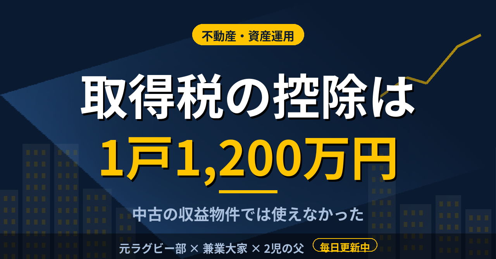
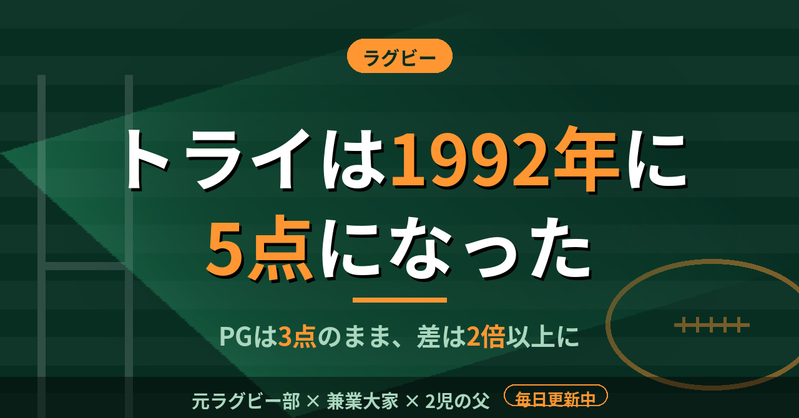
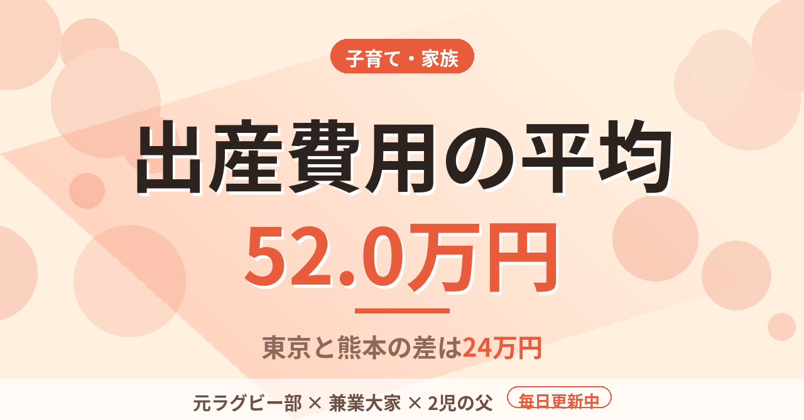
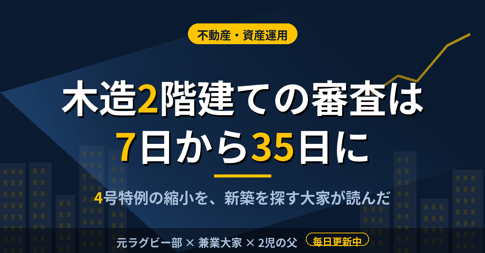
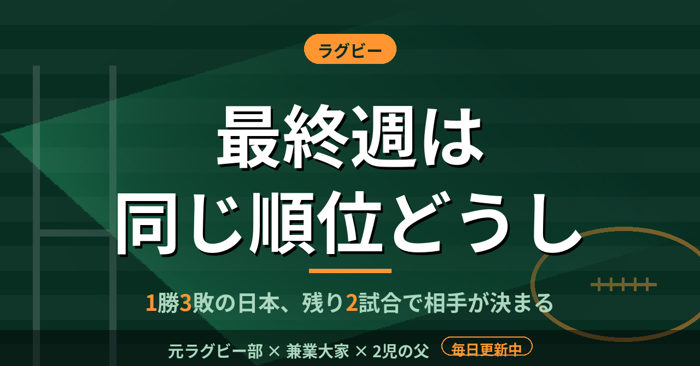
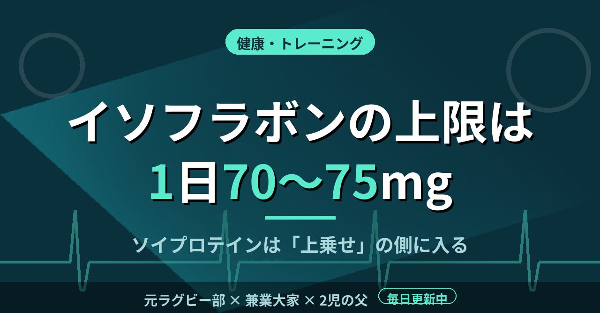

hohemaro15
ラグビー20年、不動産1棟。調べてから書く記録
このサイトについて
小学5年でラグビーを始めて、大学まで20年続けた。大阪の激戦区で6年、同志社大で4年。ポジションはユーティリティバックス。
今はメーカーで設備の電気を担当しながら、兵庫県尼崎市に木造9戸の一棟アパートを運用している。2児の父。
経験談だけで終わらせないために、書く前に必ず制度と統計を調べることにしている。数字が確認できなかった話は書かない。
書いていること
ラグビー
小5から大学まで20年。大阪の激戦区で見たこと、カテゴリが上がるたびに起きたこと。
不動産・資産運用
2016年に検討を始めて2026年に1棟目。判断基準と、断り続けた10年の話。
健康・トレーニング
増量の失敗と成功、サプリで肝臓の数値を悪くした経験、続けている設計。
子育て・家族
2歳と0歳を育てながらの時間の使い方と、資産形成の時間軸。
最近の記事
-

不動産・資産運用不動産取得税は1戸1,200万円の控除。ただし中古は自分が住む家だけだった
2棟目の諸費用を組み直していて、不動産取得税の欄で手が止まった。1棟目は中古、2棟目は新築を中心に探している。同じ「住宅」でも控除の扱いがまるで違うことを、県の案内を読んで初めて知った。…
-

ラグビートライは1992年から5点、PGは3点のまま。外した元BKが点の重さを数え直した
高3の花園予選決勝で、僕はそこまで難しくないPGを外した。PGは3点だ。あの3点がトライの何本分にあたるのか、当時は考えたこともなかった。いまの得点ルールを調べて、点数の重さを数え直してみた。…
-

子育て・家族出産費用の平均は52.0万円、東京と熊本の差は24万円。0歳の父が一時金と並べた
2歳と0歳、2人の子どもが生まれるのを夫として2回見てきた。それなのに、出産費用の全国平均がいくらなのかを調べたのは今回が初めてだ。今年5月に、出産費用の自己負担をなくす法律が成立したと知って、いまの数字を並べてみた。…
-

不動産・資産運用木造2階建ての審査は7日から35日に。新築で2棟目を探す僕が4号特例の縮小を読んだ
2棟目を探し始めて、提案の中心が新築になってきた。中古では条件が合わせにくく、利回り6.5〜7.5％の帯で出てくるのは新築ばかりだった。そこで気になったのが、2025年4月に変わった建築のルールだ。…
-

ラグビーネーションズ選手権は12か国。1勝3敗の日本は最終週に同じ順位の国と戦う
11月7日、カーディフのプリンシパリティ・スタジアムで、日本代表がウエールズに21対28で敗れた。7点差で、トライ数は3対4。結果を見て僕が最初に考えたのは、この1敗が最後にどの国との試合につながるのか、ということだった…
-

健康・トレーニングイソフラボンの上限目安は1日70〜75mg。ソイプロテインに替えた僕が数えた
増量したくなくなってから、プロテインを溶けやすいソイプロテインに替えた。牛乳由来のものより腹にたまらず、トレーニングの後にさっと飲める。ただ、大豆には大豆イソフラボンが含まれる。食品安全委員会が2006年に示した「安全な…